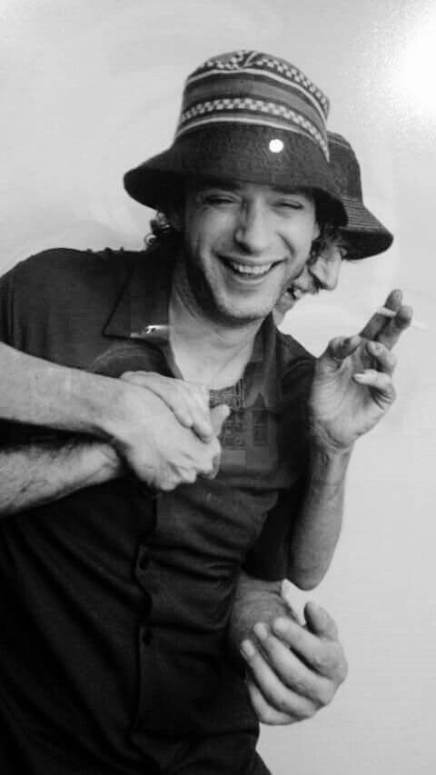

Gustavo Cerati fue un músico y compositor argentino ampliamente reconocido por su papel como líder y vocalista de la influyente banda de rock en español Soda Stereo. Nació el 11 de agosto de 1959 en Buenos Aires, Argentina, y falleció el 4 de septiembre de 2010 en coma, después de sufrir un accidente cerebrovascular en 2010.
La carrera de Cerati comenzó en la década de 1980 cuando cofundó Soda Stereo junto con Zeta Bosio y Charly Alberti. La banda se convirtió en un fenómeno musical en América Latina y contribuyó significativamente al auge del rock en español.
Después de que Soda Stereo se separara en 1997, Cerati continuó su carrera en solitario. Su música en solitario exploró una variedad de estilos, desde el rock alternativo hasta la música electrónica, y siguió siendo muy influyente en la escena musical de América Latina.
Durante su tiempo con Soda Stereo, la banda lanzó una serie de álbumes exitosos, incluyendo "Nada Personal" (1985), "Signos" (1986), "Doble Vida" (1988) y "Sueño Stereo" (1995), entre otros. El álbum "Sueño Stereo" marcó el regreso de la banda después de un período de separación y se considera uno de los más icónicos de su carrera
En su carrera en solitario lanzó varios álbumes exitosos, como "Bocanada" (1999), "Siempre es Hoy" (2002) y "Ahí Vamos" (2006).
Gustavo Cerati es recordado como uno de los músicos más talentosos y influyentes de América Latina. Su legado perdura a través de su música y su impacto en la escena del rock en español, y continúa inspirando a nuevas generaciones de artistas y amantes de la música en toda la región.
Gustavo Cerati generó un impacto significativo en la música y la cultura latinoamericana por varias razones:
inovación Musical: Cerati y Soda Stereo fueron pioneros en la exploración de nuevos sonidos y estilos en la música rock en español. Su música fusionó elementos de rock, new wave, pop, y electrónica, lo que la hizo única y atractiva para una amplia audiencia.
Profundas y Poéticas: Las letras de las canciones de Cerati eran conocidas por su profundidad y poesía. Abordaban temas emocionales y existenciales, lo que conectaba con los oyentes a un nivel personal.
Éxito Comercial: Tanto con Soda Stereo como en su carrera en solitario, Cerati disfrutó de un gran éxito comercial. Sus álbumes vendieron millones de copias, y sus conciertos a menudo atraían multitudes masivas.
en la Escena Musical: La música de Cerati y Soda Stereo influyó en muchas bandas y artistas posteriores en América Latina y más allá. Ayudaron a establecer el rock en español como un género relevante y respetado.
Unión de Generaciones: La música de Cerati trascendió generaciones. A lo largo de su carrera, atrajo a fanáticos jóvenes y adultos, lo que contribuyó a su longevidad y a su influencia continua.
Gustavo Cerati, tanto como miembro de Soda Stereo como en su carrera en solitario, recibió numerosos premios y reconocimientos a lo largo de su carrera. Algunos de los premios más destacados incluyen:
Premios Grammy Latino: Cerati y Soda Stereo ganaron varios premios Grammy Latino, incluyendo Mejor Álbum de Música Alternativa, Mejor Canción de Rock y Mejor Álbum de Música Pop/Rock, entre otros.
Premios Gardel: En Argentina, Cerati y Soda Stereo ganaron múltiples Premios Gardel, que son los premios más prestigiosos de la industria musical argentina.
Premios MTV: La banda Soda Stereo recibió varios premios MTV Latinoamérica a lo largo de los años.
En mayo de 2010, mientras se encontraba de gira en Venezuela, Cerati sufrió un accidente cerebrovascular que lo dejó en estado de coma. Permaneció en coma durante varios años, convirtiéndose en un símbolo de lucha y esperanza para sus seguidores. A pesar de la atención médica constante, no logró recuperarse completamente y finalmente falleció el 4 de septiembre de 2010.

La música de Cerati, tanto con Soda Stereo como en su carrera en solitario, continuó siendo ampliamente escuchada y apreciada después de su muerte. Sus canciones siguen siendo transmitidas en emisoras de radio y plataformas de streaming, y sus álbumes experimentaron un aumento en las ventas.
Se llevaron a cabo conciertos homenaje y eventos especiales en su memoria. Además, sus ex compañeros de Soda Stereo, Zeta Bosio y Charly Alberti, decidieron realizar una gira de reunión llamada "Me Verás Volver" en 2007-2008, como un tributo y un homenaje a Cerati. Esta gira fue un gran éxito y permitió que los fanáticos revivieran la música de Soda Stereo en vivo una vez más.
Su legado sigue vivo a través de su música y su influencia en las generaciones venideras.